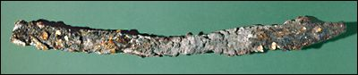
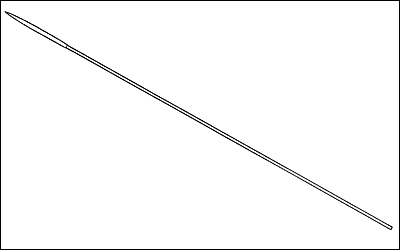

The Challenge -
Lance

This long spear head was found at the site of Lachish (in modern Israel). It was probably an Assyrian weapon used by a soldier in King Sennacherib's army which stormed the city in 701 B.C. The Assyrians captured Lachish but this weapon was lost by the city gate where it was discovered nearly three thousand years later by archaeologists.

|
|